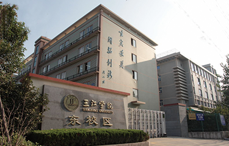
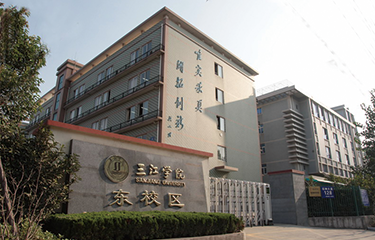

请移动到原点，就可以看到三江的人文景色以及介绍！
三江牌楼、三江牛
 

香樟树
第一教学楼（国际合作与交流处(港澳台办公室)）
文学与新闻传播学院、信息化建设与管理中心
原名中国语言文学系,创办于1997年，是三江学院最早成立的院系之一；2009年，升格为文学与新闻传播学院。原南京大学中文系主任、著名文艺理论家包忠文教授作为创办人担任首任院长（系主任），现由国家“万人计划”教学名师，国家教材委员会语文学科专家委员会委员周建忠教授担任院长。
信息化建设与管理中心是负责学校信息化建设与管理工作的直属单位。根据学校的总体部署，执行信息化建设与网络安全领导小组的决议与决策，统筹校园信息化建设规划、实施、管理与服务工作，坚持“以师生为中心”的发展思想，促进信息技术与教学及日常管理的深度融合，努力为全校师生提供学习、教学、科研和管理等信息化公共服务。
外国语学院
三江学院外语系成立于1993年，首设外贸英语专业，是学校最早设置的四个专业之一。1996年增设外贸日语专业， 2000年撤销外语系，分别成立英语系和日语系。2002年和2004年日语专业和英语专业先后经教育部批准升格为本科专业。伴随着学校跨越式的发展和学科建设的需要，2012年11月将原有的英语系、日语系和大学英语部合并组建成外国语学院，2019年成立数字贸易学院。英语专业和日语专业都已成为江苏省一流专业建设点。
行政办公楼（理事会秘书处、校长（党委）办公室、组织人事部（统战工作部）、人事处（党委教师工作部、教师发展中心）、党委宣传部（新闻中心）、财务处、纪委办公室、监察处、审计处、教务处（学科专业建设办公室）、发展委员会（继续教育学院、继续教育与培训处、校友会办公室）、科研处、质量管理与评估处、资产管理处（采购与招投标办公室）、法商学院）
2006年三江学院会计系、市场营销系和工商管理系三系合并成立商学院。2015年8月经法学院的经济系并入商学院。2019年8月法律与知识产权学院和商学院合并组建成立法商学院。学院涵盖三大学科：经济学、管理学和法学；九个专业：国际经济与贸易、互联网金融、投资学、财务管理、会计学、市场营销、电子商务及法律、物流管理、知识产权。
三江会堂、双子门
实验楼S（计算机科学与工程学院、机械与电气工程学院）
计算机科学与工程学院是三江学院重点建设和发展的学院，其软件工程学科为三江学院重点建设学科、硕士研究生培育点、软件工程专业为江苏省一流专业、江苏省嵌入印度NIIT课程体系教学改革试点、江苏省首批卓越工程师（软件类）教育培养计划试点、江苏省服务外包人才培养试点、江苏省软件工程（嵌入式培养）和计算机科学与技术（嵌入式培养）项目。
机械与电气工程学院是由原三江学院电气与自动化工程学院和机械工程学院为顺应机电融合的大趋势在2016年新合并成立的。现机械与电气工程学院设有智能制造工程、机械设计制造及其自动化（数控技术）等10个本科专业，目前招生有8个本科专业。
第四教学楼（土木工程学院 、建筑学院 ）
三江学院土木工程学院是由原土木工程系和工程管理系于2006年4月重组成立。原土木工程系创办于1998年，2005年开始招收土木工程专业本科生，原工程管理系创办于2000年，2006年开始招收工程管理专业本科生。学院现有土木工程、工程管理、工程造价等三个本科专业。
三江学院建筑系是学院最早筹办的专业之一，由东南大学郑光复教授首任建筑系主任。早期发展主要依托东大、南工大建筑系和各设计院等单位刚退休的教授、副教授和高级建筑师等资深老师作为教学保障。这支以东大、南工大建筑系退休老师为主体的教师队伍为三江建筑学院的发展奠定了坚实的根基，留下了建筑学专业办学的深厚传统和底蕴。
实验楼L（ 电子信息工程学院）
电子信息工程学院前身——电子信息工程系创办于1999年，是我校重点建设和发展的院系之一，办学历经21载，已有19届毕业生。2002年三江学院升格为本科院校，我院电子信息工程专业为首批本科专业之一，并于当年招收本科生。2007年11月，根据学校发展需要，电子工程系升格为电子信息工程学院，同年通过了教育部教学工作水平评估。现拥有电子信息工程、电子科学与技术、通信工程、微电子科学与工程、集成电路设计与集成系统五个本科专业；
第三教学楼（文化产业与旅游管理学院)
三江学院文化产业与旅游管理学院是三江学院重点发展的二级学院。李克强总理在政府工作报告中明确指出 “大力发展旅游、健康、养老、创意设计等生活和生产服务业”、“提升旅游休闲消费，推动绿色消费” 、“积极发展文化事业和文化产业”。我院文化产业管理、旅游管理、会展经济与管理和广告四个专业强强联合，学科优势互补，引入“互联网+”的教学理念进行人才培养，引领旅游、文化等朝阳产业发展，呈现出更广阔的发展前景。
创新创业学院
三江学院地处南京市雨花台区，位于中国(南京）软件谷核心区。三江学院创办于1992年，作为全国首批、江苏省首家民办本科高校，三江学院既是各项教育政策的受益者，也是教育政策勇敢探索者，因此学校近三十年的发展史就是一部精彩的民办高等教育创业史。
基于学校与生俱来的创新创业基因，三江学院一直以来非常重视创新创业教育，为整合教育资源、完善服务体系，学校于2017年8月成立创新创业学院，在此基础上，利用自身区位优势，现已联合国家级高新区-中国(南京）软件谷、校友创业型企业-汤姆马克品牌管理〈南京〉有限公司以及业内领先的专业创业服务机构-江苏创业者投资服务集团有限公司等3家单位共建成立了“三江学院大学生创新创业实践教育中心”。
体育馆（共青团三江学院委员会)
共青团三江学院委员会（以下简称“三江学院团委”）是在团省委和校党委领导下的学校先进青年的群团组织。三江学院团委紧密围绕学校党政工作要点和上级团组织工作部署，将服务大局、改革攻坚作为主基调和关键词，切实履行主体责任，持续巩固和拓展学校共青团改革的成果，凸显学校共青团的政治性、先进性、群众性，结合民办高校实际坚持立德树人，聚焦主责主业，深化改革攻坚，用服务诠释初心使命，用奋斗彰显价值担当。
三江学院南校区（艺术学院、演艺学院）
艺术学院成立于2002年。2005年办学层次由专科提升为本科，开始全面招收本科层次的艺术类学生。学院秉承“唯实求真、开拓创新”的校训，经过二十年的快速发展，现拥有—视觉传达设计、环境设计、数字媒体艺术、公共艺术、摄影、动画6个专业，其中视觉传达设计、环境设计、动画专业是江苏省一流专业建设点。
艺术学院根据学校“教学应用型”的办学定位，坚持“技艺相融、特色发展”的建设方向，形成了以应用型学科——设计学为中心，艺术与技术相融合、研究与应用相对应、专业与产业相衔接的学科专业体系，在创新人才培养、实践教学改革、应用课题研究等方面取得了显著的成效。
三江学院东校区（高等职业技术学院）
三江学院高等职业技术学院（简称高职院）成立于2002年，位于南京市雨花台区花神大道128号，属三江学院东校区，现面向中等职业学校招收对口单招、“3+4”转段、五年一贯制“专转本”高等职业教育本科学生，经过多年的不断探索形成了多专业的办学格局，理论教学、实践教学、素质教育培养体系臻于完善。
目前开设土木工程、机械设计制造及其自动化、机械电子工程、电气工程及其自动化、软件工程、财务管理、市场营销、旅游管理、英语等9个本科专业。
三江学院东山校区
三江学院东山校区位于南京市江宁区中水路58号，坐落在美丽的戴安娜湖畔，毗邻双龙大道主干道，交通位置十分便利。2015年8月始，三江学院东山校区开始启用，2020年8月，原东山校区和竹山路校区合并，成立了新的东山校区。
东山校区为学校二级学院建制，校区综合管理以管委会、党总支为主，与学校各部处条块结合，相互配合，以确保校区各项工作有序运行。东山校区按照学校“三教融合，三院协同”的总 体要求推进书院制试点建设，建有明德书院（南区）和至善书院（北区）两个书院，探索书院制实施模式。